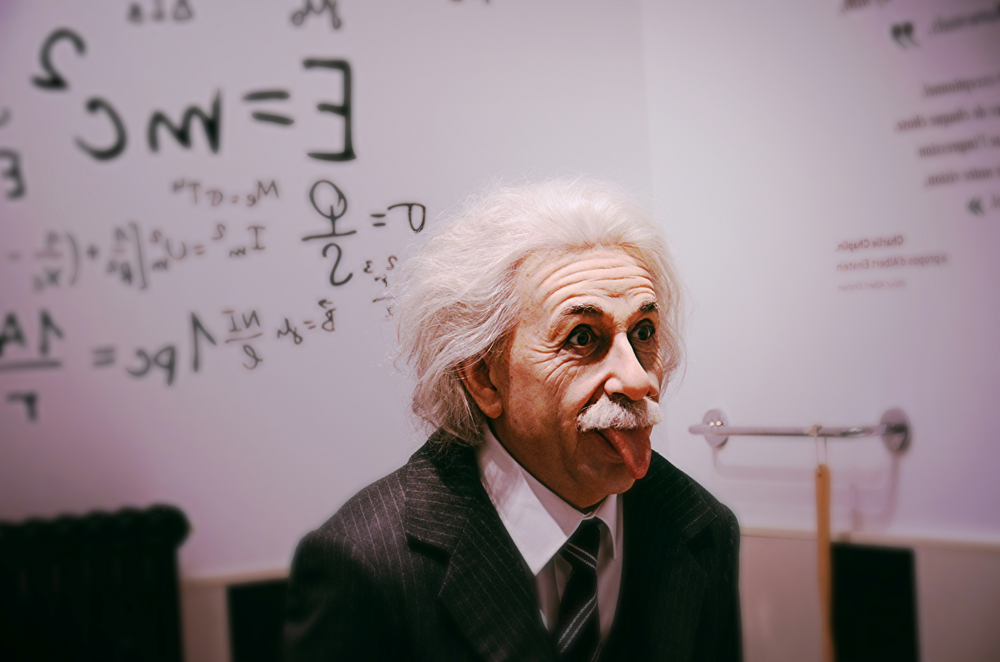
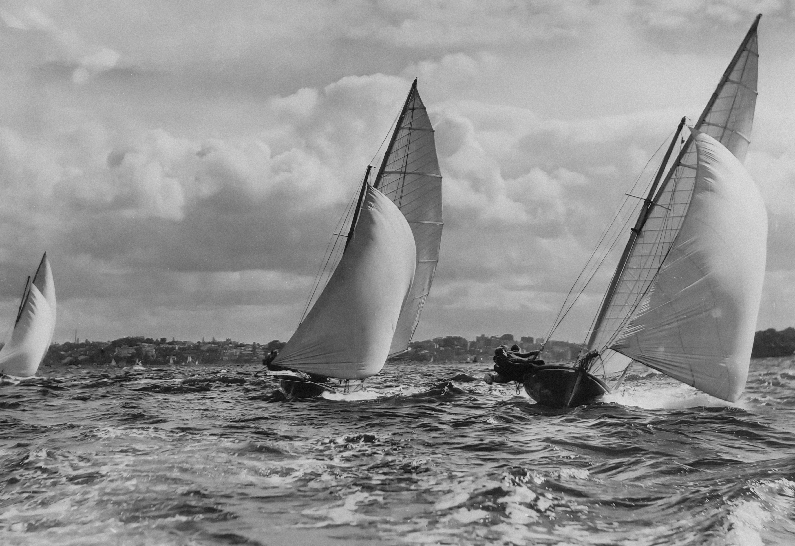
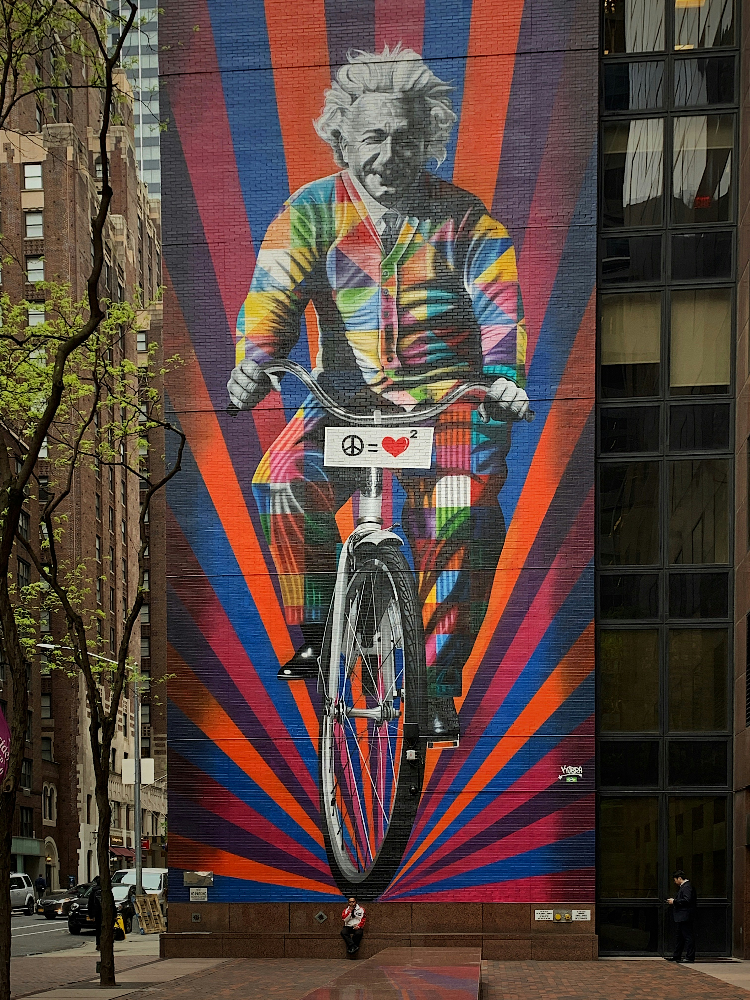
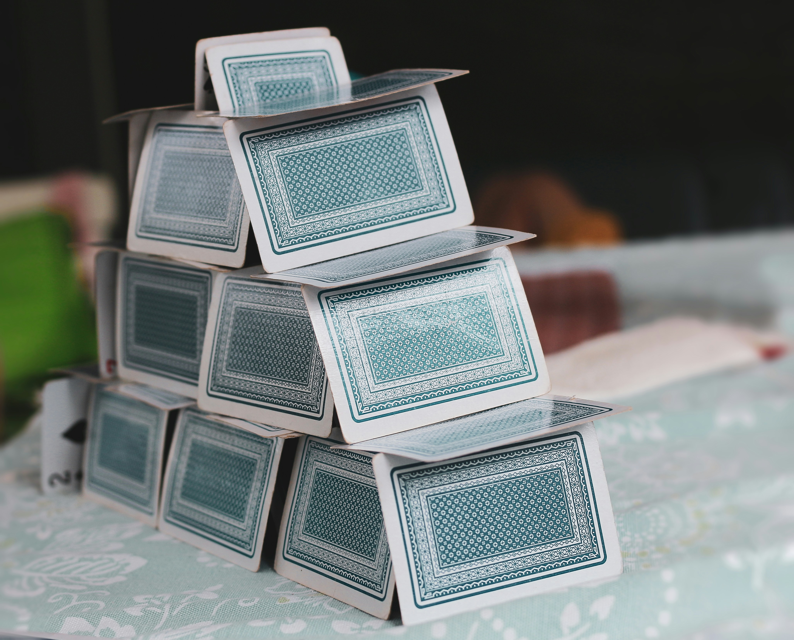
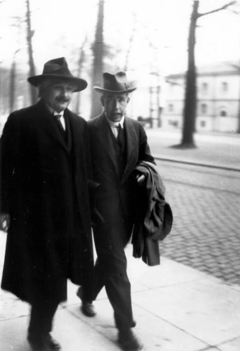
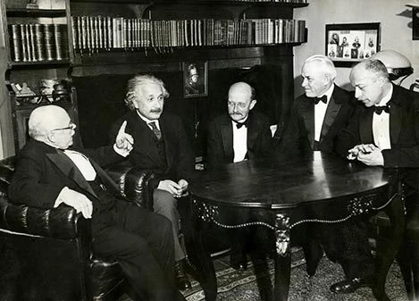
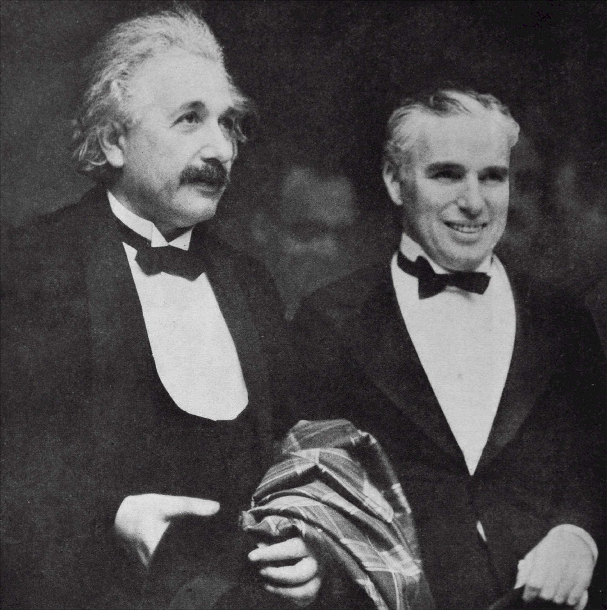
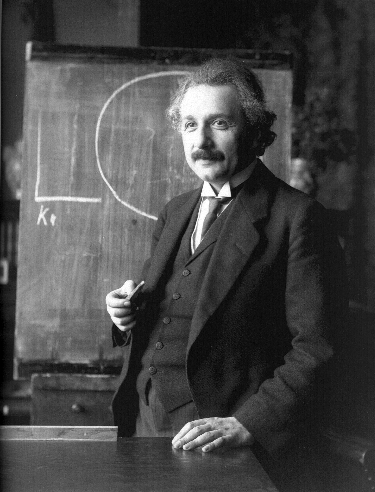

Albert Einstein (1879-1955) was a German-born theoretical physicist who changed how we understand space, time, and gravity. Born in Ulm, Germany, he worked as a patent clerk in Switzerland while developing his early ideas. In 1905, often called his “miracle year,” he published groundbreaking papers on the photoelectric effect, Brownian motion, special relativity, and the equation E = mc². In 1915 he completed his theory of general relativity, which describes gravity as the curvature of space and time. Its confirmation during the 1919 solar eclipse made him world famous. He won the 1921 Nobel Prize in Physics for explaining the photoelectric effect. After leaving Germany in 1933, he settled in Princeton, New Jersey, where he worked at the Institute for Advanced Study and became a U.S. citizen in 1940. Outside of science, he loved playing the violin and sailing, and he was a strong advocate for peace and civil rights.
Einstein was a passionate and accomplished violinist (and also played the piano). He started learning the violin at age six and famously referred to his instruments as "Lina". He often played pieces by Mozart, Bach, and Beethoven, using music as a way to relax and untangle complex scientific problems.
He loved sailing on the water, though he was known for being a rather lackadaisical navigator who occasionally drifted off course. He believed that letting his boat drift helped his mind wander and spark new ideas.


Einstein enjoyed long, solitary walks and riding his bicycle, finding that physical movement helped him think through abstract concepts.
He enjoyed building delicate, multi-story card structures (sometimes reaching up to 14 stories high), which engaged his mechanical focus.




